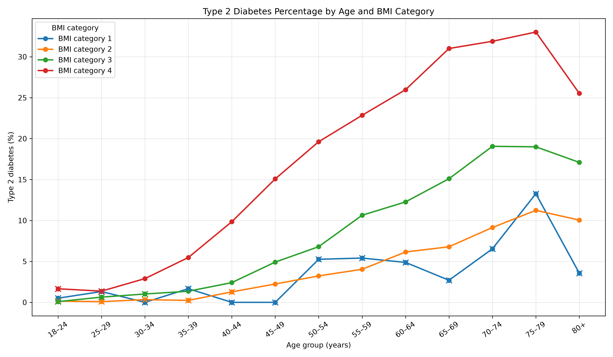

Source : fichier annuel LLCP2022.ASC du BRFSS 2022 (CDC), archive LLCP2022ASC.zip de 50 Mo, 914 Mo une fois extraite. C’est un fichier ASCII à largeur fixe : chaque enregistrement fait 2 052 caractères et chaque variable occupe des positions précises, documentées dans le variable layout du CDC (docs/variable_layout.html).
| Code | Zone | Code | Zone | Code | Zone |
|---|---|---|---|---|---|
| 10 | Delaware | 28 | Mississippi | 45 | South Carolina |
| 13 | Georgia | 29 | Missouri | 46 | South Dakota |
| 18 | Indiana | 32 | Nevada | 50 | Vermont |
| 23 | Maine | 38 | North Dakota | 55 | Wisconsin |
| 78 | U.S. Virgin Islands |
Seules ces zones ont posé la question DIABTYPE, indispensable pour distinguer le type 2 des autres formes de diabète.
| Variable | Colonnes | Utilisation |
|---|---|---|
_STATE | 1–2 | Zone de déclaration (filtre géographique) |
DIABETE4 | 129 | Statut déclaré : 1 = diabète, 3 = pas de diabète |
DIABTYPE | 271 | Type de diabète : 2 = type 2 |
_AGEG5YR | 1981–1982 | Âge en tranches de 5 ans : codes 01 (18–24) à 13 (80+) |
_BMI5CAT | 2002 | IMC : 1 insuffisance pondérale, 2 normal, 3 surpoids, 4 obésité |
_STATE ∈ {10, 13, 18, 23, 28, 29, 32, 38, 45, 46, 50, 55, 78}DIABETE4 = 1 et DIABTYPE = 2DIABETE4 = 3_AGEG5YR ∈ 01–13 et _BMI5CAT ∈ 1–4small_case_count = YES).
run.sh)curl dans un fichier temporaire, vérification de l’empreinte SHA-256 et test de l’archive, extraction ; données brutes mises en lecture seule.argparse, Pandas) lisant le fichier par blocs de 50 000 lignes pour limiter la mémoire ; résultats écrits en CSV.unittest, dont la comparaison avec le tableau de référence obtenu en Bash/AWK lors de l’exploration.set -euo pipefail, options getopts (-h -f -s -v), trap qui supprime les fichiers temporaires à l’interruption, journal horodaté dans logs/, archive datée .tar.gz, tâche cron.Après restriction aux 13 zones, 92 432 enregistrements sont disponibles ; le motif retient 76 519 observations réparties en 52 groupes âge × IMC.
| Groupe | Effectif | Part |
|---|---|---|
| Diabète de type 2 | 9 393 | 12,28 % |
| Sans diabète | 67 126 | 87,72 % |
| Total | 76 519 | 100,00 % |
| IMC | Type 2 | Sans diabète |
|---|---|---|
| 1 · Insuffisance pondérale | 0,48 % | 1,73 % |
| 2 · Normal | 11,84 % | 30,86 % |
| 3 · Surpoids | 31,15 % | 36,10 % |
| 4 · Obésité | 56,53 % | 31,30 % |
Plus d’une personne sur deux du groupe type 2 est en situation d’obésité, contre moins d’une sur trois dans le groupe sans diabète.
| Âge × IMC | Cas / total | Type 2 |
|---|---|---|
| 75–79 · Obésité | 567 / 1 717 | 33,02 % |
| 70–74 · Obésité | 868 / 2 722 | 31,89 % |
| 65–69 · Obésité | 971 / 3 131 | 31,01 % |
| 60–64 · Obésité | 789 / 3 037 | 25,98 % |
| Âge | Type 2 | Sans diabète | % |
|---|---|---|---|
| 18–24 | 22 | 4 420 | 0,50 |
| 25–29 | 24 | 3 393 | 0,70 |
| 30–34 | 57 | 3 851 | 1,46 |
| 35–39 | 120 | 4 390 | 2,66 |
| 40–44 | 245 | 4 650 | 5,01 |
| 45–49 | 405 | 4 357 | 8,50 |
| 50–54 | 669 | 5 205 | 11,39 |
| 55–59 | 925 | 5 672 | 14,02 |
| 60–64 | 1 277 | 6 810 | 15,79 |
| 65–69 | 1 627 | 7 178 | 18,48 |
| 70–74 | 1 682 | 6 530 | 20,48 |
| 75–79 | 1 265 | 4 918 | 20,46 |
| 80+ | 1 075 | 5 752 | 15,75 |
La proportion est multipliée par 40 entre 18–24 ans et 70–79 ans, puis recule à 80 ans et plus.

results/bmi_age_comparison.png) : proportion de type 2 par âge pour chaque catégorie d’IMC (1 insuffisance pondérale, 2 normal, 3 surpoids, 4 obésité). Les croix signalent les groupes de moins de 20 cas.À âge égal, la proportion de type 2 croît avec l’IMC : à 70–74 ans, elle passe de 9,1 % (IMC normal) à 19,1 % (surpoids) puis 31,9 % (obésité) ; à 45–49 ans, de 2,2 % à 4,9 % puis 15,1 %. La courbe « obésité » domine à tous les âges à partir de 30 ans. La combinaison la plus marquée est obésité × 75–79 ans (33,0 %). Ces écarts sont descriptifs : ils ne tiennent pas compte des autres facteurs (sexe, activité physique, revenu…).
Le pipeline reproduit de bout en bout l’analyse, du téléchargement vérifié aux figures et aux 9 tests automatiques. Dans l’échantillon retenu, le diabète de type 2 est fortement associé à l’âge et à l’IMC, avec un maximum chez les personnes obèses de 65 à 79 ans. Une extension naturelle serait d’intégrer les poids du BRFSS pour comparer résultats pondérés et non pondérés.
CDC, 2022 BRFSS Survey Data and Documentation — https://www.cdc.gov/brfss/annual_data/annual_2022.html · Fichier : https://www.cdc.gov/brfss/annual_data/2022/files/LLCP2022ASC.zip, téléchargé le 24 octobre 2026 ; empreinte SHA-256 dans checksums/LLCP2022ASC.zip.sha256 · Modules 2022 : https://www.cdc.gov/brfss/questionnaires/modules/category2022.htm